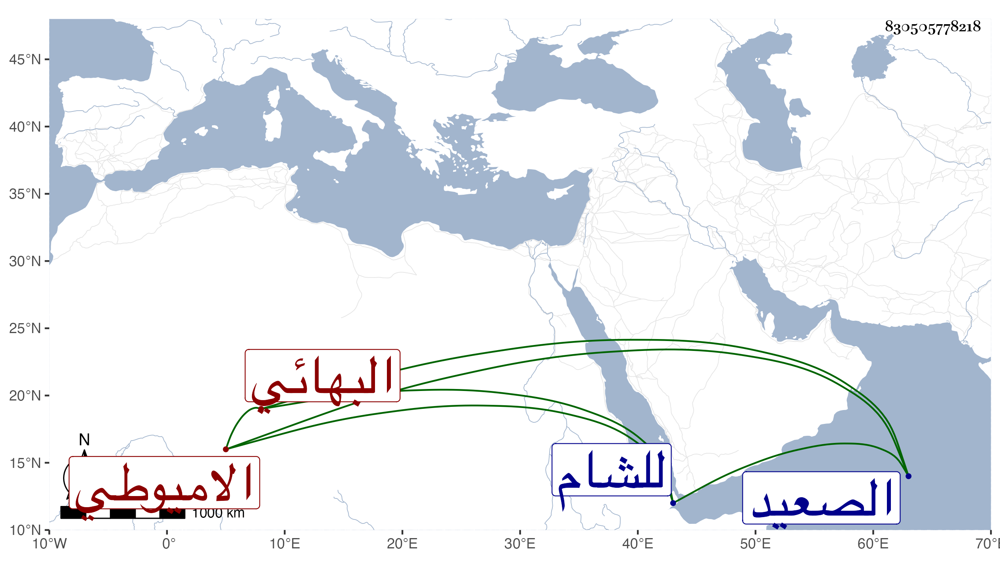

0902Sakhawi.DawLamic.ITO20230111-ara1.EIS1600.830505778218
Biography ID: 830505778218
477
عبد الرحيم بن ناصر الدين محمد بن علاء الدين أخي أسد والد القاضي الشهاب بن أسد الاميوطي الأصل البهائي ابن خالة الأهبل ويعرف كأبيه بابن علاء الدين . ممن تكسب بالتجارة في البز وغيرها وتمول وعامل فكان ممن اقترض منه الدموهي قاضي الحوض بحيث جلس عنده للشهادة وقتا ثم فارقه ودخل الصعيد وبعده سكن بجوار جامع طولون دهرا وسافر للشام في طلب غريم له فكانت منيته غريبا وحيدا سنة إحدى وتسعين وضاعت تركته وأظنه قارب السبعين وما تهيأ له الحج عفا الله عنه .
